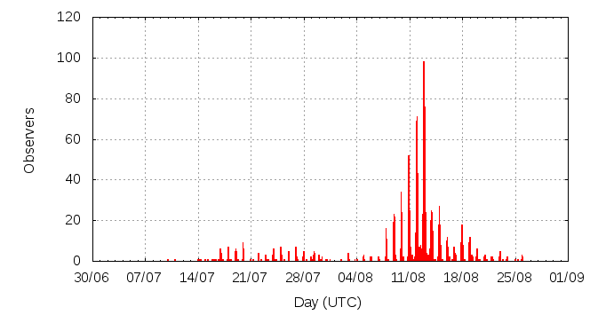

[ www.imo.net ]
This page shows automated results of the Perseids 2012, based on visual observations reported by citizen scientists through the report form of the International Meteor Organization (IMO). The information on this page is generated automatically; for scientific use please refer to manual analyses published in scientific journals (such as WGN). Send your feedback regarding this page to Geert Barentsen.
Page contents:
 11-12 August in detail (NEW)
11-12 August in detail (NEW)Note that the data will finally go into the Visual Meteor Database (VMDB) with manual inspection and rectifications. We are curretly completing the files of 2008-2011. The VMDB is an enormous project - any help will be greatly appreciated.
Page generated: 2012 October 22 at 21:05 UTC.
The graph below shows the ZHR (Zenithal Hourly Rate), which is the number of meteors an observer would see under a very dark sky with the radiant of the shower in zenith.
ZHRmax = 122 based on 27539 Perseids reported in 3981 intervals, assuming population index r = 2.0

| Time (UTC) | Solarlon | nINT | nPER | ZHR | Particle density | |
|---|---|---|---|---|---|---|
| 2012-07-10 14:51 | 108.566 | 3 | 1 | 2 | ±1 | 2 / 109·km3 |
| 2012-07-16 06:56 | 113.975 | 33 | 40 | 9 | ±1 | 9 / 109·km3 |
| 2012-07-18 10:25 | 116.022 | 70 | 117 | 10 | ±1 | 9 / 109·km3 |
| 2012-07-21 15:42 | 119.096 | 24 | 45 | 6 | ±1 | 6 / 109·km3 |
| 2012-07-24 11:39 | 121.801 | 62 | 146 | 7 | ±1 | 7 / 109·km3 |
| 2012-07-27 10:48 | 124.633 | 54 | 175 | 11 | ±1 | 10 / 109·km3 |
| 2012-07-29 18:49 | 126.864 | 50 | 108 | 8 | ±1 | 8 / 109·km3 |
| 2012-08-04 03:13 | 131.980 | 23 | 34 | 12 | ±2 | 11 / 109·km3 |
| 2012-08-07 17:19 | 135.415 | 74 | 154 | 15 | ±1 | 14 / 109·km3 |
| 2012-08-08 21:40 | 136.548 | 44 | 200 | 21 | ±1 | 20 / 109·km3 |
| 2012-08-08 23:55 | 136.638 | 74 | 202 | 14 | ±1 | 13 / 109·km3 |
| 2012-08-09 16:53 | 137.316 | 52 | 200 | 29 | ±2 | 27 / 109·km3 |
| 2012-08-09 21:58 | 137.519 | 77 | 229 | 20 | ±1 | 19 / 109·km3 |
| 2012-08-10 15:15 | 138.210 | 46 | 205 | 28 | ±2 | 26 / 109·km3 |
| 2012-08-10 21:50 | 138.473 | 112 | 611 | 30 | ±1 | 28 / 109·km3 |
| 2012-08-10 23:41 | 138.547 | 81 | 653 | 31 | ±1 | 29 / 109·km3 |
| 2012-08-11 01:46 | 138.630 | 30 | 204 | 44 | ±3 | 42 / 109·km3 |
| 2012-08-11 10:51 | 138.993 | 20 | 204 | 48 | ±3 | 45 / 109·km3 |
| 2012-08-11 19:16 | 139.330 | 36 | 200 | 56 | ±4 | 53 / 109·km3 |
| 2012-08-11 21:29 | 139.419 | 217 | 1502 | 57 | ±1 | 54 / 109·km3 |
| 2012-08-11 23:16 | 139.490 | 335 | 2744 | 65 | ±1 | 61 / 109·km3 |
| 2012-08-12 01:07 | 139.563 | 238 | 2466 | 77 | ±2 | 73 / 109·km3 |
| 2012-08-12 02:55 | 139.636 | 19 | 202 | 86 | ±6 | 81 / 109·km3 |
| 2012-08-12 05:44 | 139.748 | 23 | 252 | 111 | ±7 | 105 / 109·km3 |
| 2012-08-12 07:48 | 139.831 | 26 | 280 | 78 | ±5 | 74 / 109·km3 |
| 2012-08-12 09:55 | 139.916 | 24 | 264 | 73 | ±4 | 69 / 109·km3 |
| 2012-08-12 11:57 | 139.997 | 22 | 201 | 86 | ±6 | 81 / 109·km3 |
| 2012-08-12 15:50 | 140.152 | 33 | 228 | 122 | ±8 | 115 / 109·km3 |
| 2012-08-12 17:39 | 140.225 | 57 | 493 | 96 | ±4 | 91 / 109·km3 |
| 2012-08-12 20:08 | 140.324 | 195 | 1467 | 78 | ±2 | 74 / 109·km3 |
| 2012-08-12 21:40 | 140.386 | 427 | 3674 | 71 | ±1 | 67 / 109·km3 |
| 2012-08-12 23:43 | 140.468 | 365 | 3632 | 68 | ±1 | 64 / 109·km3 |
| 2012-08-13 01:30 | 140.539 | 209 | 2120 | 66 | ±1 | 62 / 109·km3 |
| 2012-08-13 05:56 | 140.716 | 28 | 202 | 47 | ±3 | 44 / 109·km3 |
| 2012-08-13 14:23 | 141.054 | 37 | 202 | 58 | ±4 | 55 / 109·km3 |
| 2012-08-13 19:57 | 141.277 | 29 | 200 | 48 | ±3 | 45 / 109·km3 |
| 2012-08-13 21:25 | 141.336 | 54 | 467 | 42 | ±2 | 40 / 109·km3 |
| 2012-08-13 23:35 | 141.423 | 75 | 562 | 35 | ±1 | 33 / 109·km3 |
| 2012-08-14 01:27 | 141.497 | 47 | 392 | 36 | ±2 | 34 / 109·km3 |
| 2012-08-14 19:52 | 142.235 | 52 | 200 | 34 | ±2 | 32 / 109·km3 |
| 2012-08-14 22:44 | 142.350 | 87 | 355 | 23 | ±1 | 22 / 109·km3 |
| 2012-08-15 00:44 | 142.430 | 60 | 466 | 26 | ±1 | 25 / 109·km3 |
| 2012-08-15 14:48 | 142.994 | 48 | 207 | 20 | ±1 | 19 / 109·km3 |
| 2012-08-16 06:17 | 143.614 | 46 | 202 | 15 | ±1 | 14 / 109·km3 |
| 2012-08-17 14:44 | 144.914 | 67 | 203 | 9 | ±1 | 9 / 109·km3 |
| 2012-08-18 00:17 | 145.297 | 52 | 201 | 8 | ±1 | 8 / 109·km3 |
| 2012-08-18 23:56 | 146.245 | 61 | 200 | 7 | ±0 | 7 / 109·km3 |
| 2012-08-20 16:38 | 147.878 | 46 | 149 | 9 | ±1 | 9 / 109·km3 |
| 2012-08-23 09:46 | 150.493 | 32 | 76 | 6 | ±1 | 6 / 109·km3 |
| 2012-08-25 21:56 | 152.910 | 5 | 2 | 2 | ±1 | 2 / 109·km3 |
The reported intervals are automatically added together into the bins shown above, based on the number of meteors and the distribution of the intervals. For each bin, the following parameters are computed:

| Time (UTC) | Solarlon | nINT | nPER | ZHR | Particle density | |
|---|---|---|---|---|---|---|
| 2012-08-11 18:50 | 139.312 | 50 | 301 | 64 | ±4 | 60 / 109·km3 |
| 2012-08-11 20:50 | 139.392 | 53 | 304 | 47 | ±3 | 44 / 109·km3 |
| 2012-08-11 21:22 | 139.414 | 41 | 300 | 65 | ±4 | 61 / 109·km3 |
| 2012-08-11 21:39 | 139.425 | 39 | 300 | 52 | ±3 | 49 / 109·km3 |
| 2012-08-11 21:57 | 139.437 | 43 | 308 | 62 | ±4 | 59 / 109·km3 |
| 2012-08-11 22:13 | 139.447 | 38 | 303 | 60 | ±3 | 57 / 109·km3 |
| 2012-08-11 22:29 | 139.458 | 44 | 303 | 58 | ±3 | 55 / 109·km3 |
| 2012-08-11 22:44 | 139.469 | 32 | 301 | 67 | ±4 | 63 / 109·km3 |
| 2012-08-11 22:56 | 139.476 | 33 | 309 | 60 | ±3 | 57 / 109·km3 |
| 2012-08-11 23:09 | 139.485 | 39 | 314 | 65 | ±4 | 61 / 109·km3 |
| 2012-08-11 23:23 | 139.494 | 38 | 303 | 70 | ±4 | 66 / 109·km3 |
| 2012-08-11 23:37 | 139.504 | 33 | 307 | 78 | ±4 | 74 / 109·km3 |
| 2012-08-11 23:51 | 139.513 | 36 | 301 | 67 | ±4 | 63 / 109·km3 |
| 2012-08-12 00:06 | 139.523 | 37 | 305 | 57 | ±3 | 54 / 109·km3 |
| 2012-08-12 00:18 | 139.531 | 33 | 303 | 82 | ±5 | 77 / 109·km3 |
| 2012-08-12 00:32 | 139.541 | 33 | 303 | 73 | ±4 | 69 / 109·km3 |
| 2012-08-12 00:44 | 139.549 | 34 | 301 | 64 | ±4 | 60 / 109·km3 |
| 2012-08-12 00:59 | 139.559 | 34 | 305 | 71 | ±4 | 67 / 109·km3 |
| 2012-08-12 01:12 | 139.567 | 26 | 311 | 82 | ±5 | 77 / 109·km3 |
| 2012-08-12 01:24 | 139.575 | 27 | 306 | 71 | ±4 | 67 / 109·km3 |
| 2012-08-12 01:38 | 139.584 | 25 | 301 | 96 | ±6 | 91 / 109·km3 |
| 2012-08-12 01:52 | 139.594 | 24 | 304 | 89 | ±5 | 84 / 109·km3 |
| 2012-08-12 02:53 | 139.634 | 27 | 300 | 82 | ±5 | 77 / 109·km3 |
| 2012-08-12 06:12 | 139.767 | 28 | 300 | 96 | ±6 | 91 / 109·km3 |
| 2012-08-12 08:31 | 139.860 | 28 | 317 | 78 | ±4 | 74 / 109·km3 |
| 2012-08-12 10:55 | 139.955 | 29 | 300 | 74 | ±4 | 70 / 109·km3 |
| 2012-08-12 15:34 | 140.142 | 42 | 309 | 121 | ±7 | 114 / 109·km3 |
| 2012-08-12 17:31 | 140.220 | 34 | 303 | 98 | ±6 | 93 / 109·km3 |
| 2012-08-12 18:50 | 140.272 | 35 | 302 | 80 | ±5 | 76 / 109·km3 |
| 2012-08-12 19:50 | 140.312 | 37 | 302 | 73 | ±4 | 69 / 109·km3 |
| 2012-08-12 20:10 | 140.326 | 42 | 302 | 83 | ±5 | 78 / 109·km3 |
| 2012-08-12 20:24 | 140.335 | 41 | 312 | 82 | ±5 | 77 / 109·km3 |
| 2012-08-12 20:37 | 140.344 | 40 | 306 | 78 | ±4 | 74 / 109·km3 |
| 2012-08-12 20:48 | 140.351 | 42 | 302 | 62 | ±4 | 59 / 109·km3 |
| 2012-08-12 20:58 | 140.358 | 37 | 300 | 78 | ±4 | 74 / 109·km3 |
| 2012-08-12 21:10 | 140.366 | 43 | 308 | 70 | ±4 | 66 / 109·km3 |
| 2012-08-12 21:20 | 140.372 | 29 | 307 | 82 | ±5 | 77 / 109·km3 |
| 2012-08-12 21:30 | 140.379 | 39 | 308 | 73 | ±4 | 69 / 109·km3 |
| 2012-08-12 21:42 | 140.387 | 39 | 310 | 62 | ±4 | 59 / 109·km3 |
| 2012-08-12 21:52 | 140.394 | 40 | 310 | 68 | ±4 | 64 / 109·km3 |
| 2012-08-12 22:02 | 140.401 | 26 | 312 | 84 | ±5 | 79 / 109·km3 |
| 2012-08-12 22:08 | 140.404 | 26 | 304 | 94 | ±5 | 89 / 109·km3 |
| 2012-08-12 22:17 | 140.411 | 30 | 304 | 60 | ±3 | 57 / 109·km3 |
| 2012-08-12 22:26 | 140.417 | 31 | 300 | 72 | ±4 | 68 / 109·km3 |
| 2012-08-12 22:38 | 140.425 | 38 | 314 | 64 | ±4 | 60 / 109·km3 |
| 2012-08-12 22:51 | 140.433 | 34 | 302 | 66 | ±4 | 62 / 109·km3 |
| 2012-08-12 23:02 | 140.440 | 36 | 302 | 73 | ±4 | 69 / 109·km3 |
| 2012-08-12 23:12 | 140.447 | 31 | 333 | 63 | ±3 | 60 / 109·km3 |
| 2012-08-12 23:23 | 140.454 | 23 | 305 | 70 | ±4 | 66 / 109·km3 |
| 2012-08-12 23:31 | 140.460 | 27 | 316 | 64 | ±4 | 60 / 109·km3 |
| 2012-08-12 23:42 | 140.467 | 36 | 306 | 66 | ±4 | 62 / 109·km3 |
| 2012-08-12 23:54 | 140.475 | 30 | 314 | 68 | ±4 | 64 / 109·km3 |
| 2012-08-13 00:05 | 140.483 | 32 | 304 | 77 | ±4 | 73 / 109·km3 |
| 2012-08-13 00:14 | 140.489 | 29 | 306 | 81 | ±5 | 77 / 109·km3 |
| 2012-08-13 00:24 | 140.495 | 29 | 303 | 66 | ±4 | 62 / 109·km3 |
| 2012-08-13 00:34 | 140.502 | 30 | 304 | 59 | ±3 | 56 / 109·km3 |
| 2012-08-13 00:46 | 140.509 | 28 | 310 | 69 | ±4 | 65 / 109·km3 |
| 2012-08-13 00:57 | 140.517 | 27 | 300 | 69 | ±4 | 65 / 109·km3 |
| 2012-08-13 01:11 | 140.526 | 29 | 307 | 71 | ±4 | 67 / 109·km3 |
| 2012-08-13 01:26 | 140.536 | 27 | 308 | 62 | ±4 | 59 / 109·km3 |
| 2012-08-13 01:40 | 140.546 | 32 | 316 | 66 | ±4 | 62 / 109·km3 |
| 2012-08-13 01:56 | 140.557 | 30 | 305 | 63 | ±4 | 60 / 109·km3 |
| 2012-08-13 03:39 | 140.625 | 44 | 305 | 46 | ±3 | 43 / 109·km3 |
| 2012-08-13 07:43 | 140.788 | 18 | 143 | 43 | ±4 | 41 / 109·km3 |
Data has been received from 269 observers in 37 countries. Thank you for your efforts!
Note: click on the map for an interactive version.

| Observer | Country | Teff | nPER |
|---|---|---|---|
| Karina Abrosimova | Russia | 1.8h | 119 |
| Tomasz Adam | Poland | 3.58h | 13 |
| Vladislav Agletdinov | Russia | 0.43h | 2 |
| Chinenov Aleksey | Russia | 2.00h | 40 |
| Mina Alizadeh | Iran | 0.40h | 5 |
| Hamed Altafi | Iran | 1.66h | 11 |
| Sofiya Anikevich | Belarus | 3.24h | 17 |
| Joanna Antosik | Poland | 5.25h | 113 |
| Rainer Arlt | Germany | 4.30h | 109 |
| Stela Arlt | Germany | 0.97h | 15 |
| Arash Arsanjani | Iran | 1.08h | 26 |
| Tom Axelsen | Denmark | 1.72h | 69 |
| Reza Azadeh | Iran | 1.00h | 18 |
| Pierre Bader | Germany | 27.28h | 220 |
| Pierre Bader | Germany | 1.35h | 40 |
| Vega Bai | China | 1.70h | 23 |
| János Bakos | Hungary | 4.21h | 78 |
| Janos Bakos | Hungary | 5.86h | 275 |
| Attila Bathó | Hungary | 0.95h | 20 |
| Sara Belejova | Slovakia | 5.08h | 57 |
| Zora Beljic | Serbia | 3.40h | 47 |
| Patrick Benson | United States | 3.04h | 26 |
| Alexey Berezhnoy | Russia | 0.45h | 4 |
| Jean-marie Biets | Belgium | 5.5h | 72 |
| Longji Bing | China | 0.33h | 4 |
| Martina Bírosíková | Slovakia | 0.50h | 5 |
| Milesa Blagojevic | Serbia | 5.64h | 223 |
| Zoltan Blumberger | Hungary | 0.67h | 4 |
| Nina Bogdanovic | Serbia | 5.48h | 56 |
| Nina Bogdanovic | Serbia | 1.83h | 10 |
| Maksimilijan Boskovic | Serbia | 11.25h | 147 |
| Steven Brown | United Kingdom | 2.00h | 21 |
| Mccurdy Bruce | Canada | 1.10h | 4 |
| Ivan Bryukhanov | Belarus | 2h | 12 |
| Andreas Buchmann | Switzerland | 1.25h | 19 |
| Igor Bukva | Serbia | 20.32h | 317 |
| Lukás Bulko | Slovakia | 1.74h | 72 |
| Alexandr Burday | Ukraine | 2.41h | 74 |
| Vasko Cacanoski | Macedonia | 1.42h | 62 |
| Yingyi Cao | China | 0.54h | 7 |
| Dengcheng Chen | China | 1.20h | 22 |
| Simiao Cheng | China | 3.42h | 95 |
| Tianzeng Chen | China | 2.63h | 41 |
| Nicolae Adrian Corlaci | Romania | 16.41h | 173 |
| Nicolae Adrian Corlaci | Romania | 0.50h | 7 |
| Daniel Cosovanu | Romania | 5.86h | 25 |
| Ilie Cosovanu | Romania | 4.68h | 27 |
| Lucian Cosovanu | Romania | 5.22h | 9 |
| Vasile Cosovanu | Romania | 0.08h | 1 |
| Tibor Csörgei | Slovakia | 8.15h | 176 |
| Anderson Dantas | Brazil | 2.26h | 6 |
| Martin Dana | Czech Republic | 1.35h | 34 |
| Biljana Davidovic | Serbia | 3.40h | 101 |
| Goedele Deconinck | Belgium | 6.85h | 73 |
| Michel Deconinck | France | 4.87h | 28 |
| C B Devgun | India | 1.6h | 21 |
| Alexandra Deyneka | Ukraine | 3.1h | 92 |
| Jose Vicente Diaz Martinez | Spain | 2h | 12 |
| Sietse Dijkstra | Netherlands | 2.12h | 3 |
| Sara Djurdjevic | Serbia | 7.34h | 48 |
| Elena Domraheva | Russia | 1.24h | 25 |
| Elena Domraheva | Russia | 1.00h | 3 |
| Vladimir Dosovic | Serbia | 17.25h | 212 |
| Vladimir Dososvic | Serbia | 2.00h | 30 |
| Vladimir Dosovic | Serbia | 1.83h | 10 |
| Jozef Drga | Slovakia | 0.95h | 37 |
| Audrius Dubietis | Lithuania | 1.98h | 40 |
| Jaros?aw Dygos | Poland | 14.01h | 71 |
| Motahareh Ebrahimi | Iran | 2.65h | 47 |
| Balázs Eigner | Hungary | 0.43h | 7 |
| Frank Enzlein | Germany | 4.82h | 137 |
| Taravat Ershadi | Iran | 1.50h | 27 |
| Egor Fadeev | Russia | 4h | 69 |
| Tomasz Fajfer | Poland | 1.67h | 52 |
| Reyhaneh Fallah | Iran | 1.35h | 25 |
| Alexandr Fetisov | Russia | 0.75h | 6 |
| Balázs Fodor | Hungary | 1.74h | 27 |
| Balazs Fodor | Hungary | 0.67h | 23 |
| Zsuzsanna Fricska | Hungary | 1.04h | 1 |
| Stefan Fuks | Serbia | 20.62h | 348 |
| Ivanka Getsova | Bulgaria | 11.63h | 118 |
| Maria Gimova | Slovakia | 1.77h | 15 |
| William Godley | United States | 6.24h | 56 |
| Stevan Golubovic | Serbia | 17.52h | 182 |
| Jose Gomez Castano | Spain | 1.00h | 16 |
| Svetlana Goncova | Ukraine | 7.51h | 60 |
| Mitja Govedi? | Slovenia | 7.37h | 154 |
| Ljubica Grasic | Serbia | 20.35h | 632 |
| Shy Halatzi | Israel | 1.57h | 53 |
| Oliver Hanke | Germany | 5.45h | 175 |
| Joost Hartman | Netherlands | 4.33h | 79 |
| Amir Hasanzadeh | Iran | 2.37h | 39 |
| Carl Hergenrother | United States | 0.95h | 31 |
| Kamil Hornoch | Czech Republic | 22.74h | 841 |
| Dilyan Hristov | Bulgaria | 2.34h | 92 |
| Dilyan Hristov | Bulgaria | 2.73h | 18 |
| Chengyun Huang | China | 2.24h | 25 |
| Milos Igrutinovic | Serbia | 2.86h | 64 |
| Stanislav Simkovic | Slovakia | 1.50h | 8 |
| Lars Jacobs | Belgium | 6.01h | 115 |
| Gerg? Jakab | Hungary | 0.01h | 1 |
| Gergo Jakab | Hungary | 6.3h | 23 |
| Milada Jakubecova | Slovakia | 4.08h | 55 |
| Carl Johannink | Germany | 10.22h | 312 |
| Karoly Jonas | Hungary | 14.02h | 260 |
| Javor Kac | Slovenia | 42.95h | 673 |
| Mario Kadl?ík | Germany | 4h | 17 |
| Csilla Kalup | Hungary | 5.05h | 84 |
| Desislava Kalaidjieva | Bulgaria | 4h | 56 |
| Dzmitry Kananovich | Estonia | 1.17h | 18 |
| Jozef Karlik | Slovakia | 1.00h | 6 |
| Jonas Kaspariunas | Lithuania | 2.33h | 122 |
| Masoume Kazemi | Iran | 2.63h | 47 |
| Roy Keeris | Netherlands | 3.41h | 71 |
| Tamás Sándor Kiss | Hungary | 1.9h | 3 |
| Zdenek Komarek | Slovakia | 4.07h | 38 |
| Tamas Koros | Hungary | 1.94h | 6 |
| Zoltan Tamas Koros | Hungary | 2.43h | 1 |
| Andrija Kostic | Serbia | 14.7h | 301 |
| Roman Kostenko | Ukraine | 1.00h | 3 |
| Ralf Koschack | Germany | 8.97h | 406 |
| Jozef Kovac | Slovakia | 11.47h | 369 |
| Martina Krivosová | Slovakia | 1.74h | 45 |
| Pál Csaba K?rös | Hungary | 1.04h | 1 |
| Marina Kychyzhyyeva | Ukraine | 1.26h | 3 |
| Maryna Kychyzhyyeva | Ukraine | 3.45h | 54 |
| Martin Labudík | Slovakia | 1.50h | 10 |
| Martin Labudik | Slovakia | 1.75h | 18 |
| Greet Lembregts | Belgium | 10.67h | 156 |
| Jan Lembregts | Belgium | 10.36h | 179 |
| [-tomasz Lenart | Poland | 1.00h | 5 |
| Tomasz Lenart | Poland | 7.04h | 42 |
| Anna Levin | Israel | 18.45h | 434 |
| Anglin Li | China | 1.34h | 53 |
| Michael Linnolt | United States | 1.00h | 9 |
| Junda Liu | China | 1.00h | 1 |
| Sizhuang Liu | China | 2.13h | 77 |
| Yawei Liu | China | 1.02h | 31 |
| Zixuan Liu | China | 1.00h | 25 |
| Tomasz Lojek | Poland | 7.05h | 75 |
| Cosovanu Lucian | Romania | 0.87h | 12 |
| Robert Lunsford | United States | 6.83h | 179 |
| Chengfeng Luo | China | 0.37h | 5 |
| Liya Luo | China | 1.00h | 24 |
| Alexandr Maidik | Ukraine | 42.5h | 235 |
| Boris Majic | Serbia | 7.85h | 186 |
| Boris Majic | Serbia | 2.11h | 24 |
| Veikko Mäkelä | Finland | 1.70h | 43 |
| Qiang Ma | China | 3h | 40 |
| Antonio Martinez Picar | Spain | 1.66h | 9 |
| Claudia Marka | Germany | 2.61h | 45 |
| Pierre Martin | Canada | 7.01h | 212 |
| Mikhail Maslov | Russia | 5.12h | 191 |
| Alastair Mcbeath | United Kingdom | 5h | 20 |
| Bruce Mccurdy | Canada | 7.1h | 164 |
| Marco Micheli | Italy | 1.88h | 71 |
| Samuel Michalanský | Slovakia | 1.77h | 19 |
| Andjelka Milovanovic | Serbia | 3.06h | 82 |
| Barbara Milovanovic | Serbia | 3.06h | 76 |
| Damnjan Milic | Serbia | 3.40h | 155 |
| Tijana Milenkovic | Serbia | 0.84h | 10 |
| Vladislava Milic | Serbia | 2.72h | 86 |
| Artem Mirgorod | Ukraine | 1.5h | 11 |
| Alexandra Molnar | Hungary | 5.89h | 11 |
| Sirko Molau | Germany | 7.55h | 342 |
| Porya Momen | Iran | 2.40h | 27 |
| Alexsandr Morozov | Russia | 7.85h | 57 |
| Konstantin Morozov | Belarus | 18.5h | 217 |
| Marian Mraz | Slovakia | 3.07h | 31 |
| Daniel Muller | Hungary | 4.36h | 16 |
| Umberto Mule Stagno | Malta | 5.00h | 147 |
| Maciek Myszkiewicz | Poland | 52.12h | 398 |
| Adrienn Nagy | Hungary | 5.11h | 193 |
| Rafael Neumann | Germany | 5.89h | 70 |
| Michael Nolle | Malta | 2.00h | 32 |
| Artyom Novichonok | Russia | 7.14h | 91 |
| Dimitrie Olenici | Romania | 1.33h | 20 |
| Klemen ?otar | Slovenia | 2.67h | 69 |
| Jan Otrekal | Slovakia | 9.11h | 84 |
| Michal Palo | Slovakia | 4.08h | 39 |
| Igor Parnahaj | Slovakia | 1.88h | 23 |
| Jaroslav Pastorek | Slovakia | 3.25h | 45 |
| Pavol Pastor | Slovakia | 9.79h | 283 |
| Dusan Pavlovic | Serbia | 2.38h | 67 |
| Elizabet Petkova | Bulgaria | 7.04h | 85 |
| Krzysztof Pieszczoch | Poland | 11.64h | 189 |
| Krzysztof Pieszczoch | Poland | 5.26h | 10 |
| Krzysztof Polakowski | Poland | 3.26h | 110 |
| Kristina Popovic | Serbia | 2.04h | 39 |
| Mina Pourkhatun | Iran | 1.00h | 31 |
| Jelena Prokic | Serbia | 2.55h | 63 |
| Szaniszló Prohászka | Hungary | 2.49h | 22 |
| Sasha Prokofyev | Russia | 1.48h | 28 |
| Szaniszlo Prohaszka | Hungary | 3.53h | 28 |
| Constantin Psenitchi | Romania | 0.91h | 5 |
| Costantin Psenitchi | Romania | 1.75h | 25 |
| Milo? Radulovi? | Serbia | 6.34h | 30 |
| Simona Radeva | Bulgaria | 1.00h | 0 |
| Ella Ratz | Israel | 9.9h | 206 |
| Anna Rieth | Hungary | 1.50h | 6 |
| Bohu? Ro?ko | Slovakia | 1.88h | 39 |
| Boris Ro?ko | Slovakia | 1.77h | 27 |
| Vladimir Romanov | Russia | 2.33h | 3 |
| Raluca Rufu | Israel | 16.99h | 349 |
| Agnieszka Ruminska | Poland | 3.62h | 51 |
| Hojjat Sadat Hosseini | Iran | 0.88h | 22 |
| Tamas Santa | Hungary | 5.51h | 87 |
| Tamás Sánta | Hungary | 0.53h | 9 |
| Kitti Sazbó | Hungary | 2.19h | 48 |
| Alex Scholten | Netherlands | 1.85h | 70 |
| Christian Schmiel | Germany | 4.31h | 93 |
| Kai Schultze | Germany | 8.26h | 337 |
| Matej Schwartz | Slovakia | 3.07h | 26 |
| Ivan Sergey | Belarus | 6.23h | 94 |
| Eklil Shomali | Iran | 1.45h | 18 |
| Costantino Sigismondi | Italy | 2.73h | 35 |
| Urmas Sisask | Estonia | 2.00h | 69 |
| Marcin Skaslski | Poland | 5.40h | 201 |
| Marcin Skalski | Poland | 12.6h | 78 |
| Andrzej Skoczewski | Poland | 9.67h | 83 |
| Katarina Skopalova | Slovakia | 4.07h | 21 |
| Vesna Slavkovi? | Serbia | 10.59h | 65 |
| Wout Smellenbergh | Belgium | 4.64h | 35 |
| Mina Soleymanian | Iran | 1.00h | 17 |
| Ulrich Sperberg | Germany | 10.65h | 218 |
| Biljana Stankovic | Serbia | 1.57h | 44 |
| Irina Stanisic | Serbia | 2.19h | 11 |
| Predrag Stamenkovic | Serbia | 13.14h | 121 |
| Sergey Stariy | Ukraine | 1.77h | 57 |
| Anton Stipec | Croatia | 3.26h | 154 |
| Martin Stojanovski | Macedonia | 2.72h | 125 |
| Nikola Stojanovic | Serbia | 17.9h | 298 |
| Nikola Stojanovic | Serbia | 2.76h | 15 |
| Wesley Stone | United States | 5.32h | 152 |
| Jury Suetin | Russia | 0.75h | 11 |
| Fengwu Sun | China | 0.89h | 24 |
| Yuhong Sun | China | 1.70h | 62 |
| Matej Sustr | Slovakia | 2.28h | 74 |
| Pavel Svozil | Czech Republic | 1.41h | 51 |
| Adam Szabo | Hungary | 9.83h | 415 |
| Kitti Szabó | Hungary | 4.65h | 111 |
| Richard Taibi | United States | 2.98h | 35 |
| Hanjie Tan | China | 2.45h | 41 |
| Ilan Tchenak | Israel | 14.94h | 311 |
| Tamara Tchenak | Israel | 16.77h | 315 |
| Csilla Tepliczky | Hungary | 28.43h | 381 |
| Istvan Tepliczky | Hungary | 2.59h | 64 |
| Xin Tian | China | 0.95h | 14 |
| Miroslav Tirpak | Slovakia | 1.88h | 43 |
| Terrence Ross | United States | 73.95h | 561 |
| Christoph Gerber | Germany | 25.58h | 296 |
| Jakub Koukal | Czech Republic | 11.92h | 317 |
| Jurgen Rendtel | Germany | 29.77h | 400 |
| Branislav Savic | Serbia | 21.12h | 408 |
| Anatoliy Vasylenko | Ukraine | 8.35h | 62 |
| Michel Vandeputte | Belgium | 56.86h | 898 |
| Koen Miskotte | Netherlands | 24.27h | 468 |
| Vilem Heblik | Czech Republic | 23.7h | 328 |
| Salvador Aguirre | Mexico | 4.8h | 85 |
| Nela Todorovic | Serbia | 7.24h | 77 |
| Rafael Ruben Torregrosa Soler | Spain | 2.75h | 50 |
| Raul Truta | Romania | 2.92h | 118 |
| Pawel Trybus | Poland | 1.00h | 26 |
| Anton Tuul | Estonia | 1.83h | 27 |
| Shigeo Uchiyama | Japan | 1.75h | 62 |
| Sperberg Ulrich | Germany | 2.05h | 14 |
| Hillar Uudevald | Estonia | 0.84h | 18 |
| Alexandra Vancea | Romania | 2.09h | 27 |
| Erwin Van Ballegoij | Netherlands | 1.27h | 21 |
| Hendrik Vandenbruaene | Belgium | 3.3h | 79 |
| Peter Van Leuteren | Netherlands | 17.35h | 432 |
| Wienie Van Der Oord | Israel | 6.98h | 103 |
| Betina Vasileva | Bulgaria | 11h | 127 |
| Valentin Velkov | Bulgaria | 4.42h | 78 |
| Jan Verbert | Belgium | 6.77h | 84 |
| Benjámin Vigh | Hungary | 2.22h | 35 |
| Benjamin Vigh | Hungary | 4.51h | 47 |
| Anna Vlasova | Russia | 1.00h | 35 |
| Alla Volkova | Ukraine | 1.49h | 6 |
| Sabine Waechter | Germany | 1.23h | 4 |
| Ewa Wala | Poland | 10.1h | 138 |
| Helena Walter | Hungary | 4.07h | 17 |
| Gege Wang | China | 0.89h | 28 |
| Yuankun Wang | United States | 1.18h | 14 |
| William Watson | United States | 21.3h | 185 |
| Xiaofan Wei | China | 1.50h | 46 |
| Oliver Wusk | Germany | 7.82h | 139 |
| Yanjie Wu | China | 1.02h | 50 |
| Wenwen Xiao | China | 1.00h | 20 |
| Qi Xin | China | 0.60h | 16 |
| Yulia Yancheva | Bulgaria | 2.77h | 76 |
| Oleg Yavorski | Russia | 1.41h | 31 |
| Raziyeh Zahedi | Iran | 1.50h | 25 |
| Ana Zegarac | Serbia | 12.6h | 220 |
| Weizhou Zeng | China | 2.89h | 38 |
| Junyan Zhang | China | 2.25h | 49 |
| Nianfeng Zhang | China | 0.51h | 6 |
| Pavel Zhavoronkov | Russia | 2.00h | 33 |
| Przemyslaw Zoladek | Poland | 11.1h | 177 |
Create your own analysis. The files below can be opened using Excel:
per2012_rate.csv (number of meteors per interval per observer)
per2012_magn.csv (number of meteors per magnitude bin per observer)
The information on this page may be distributed freely provided credit is given to the International Meteor Organization (IMO) and, when possible, to the individual observers. The computer facilities to generate this page are provided by ESA/RSSD and Armagh Observatory.
References: